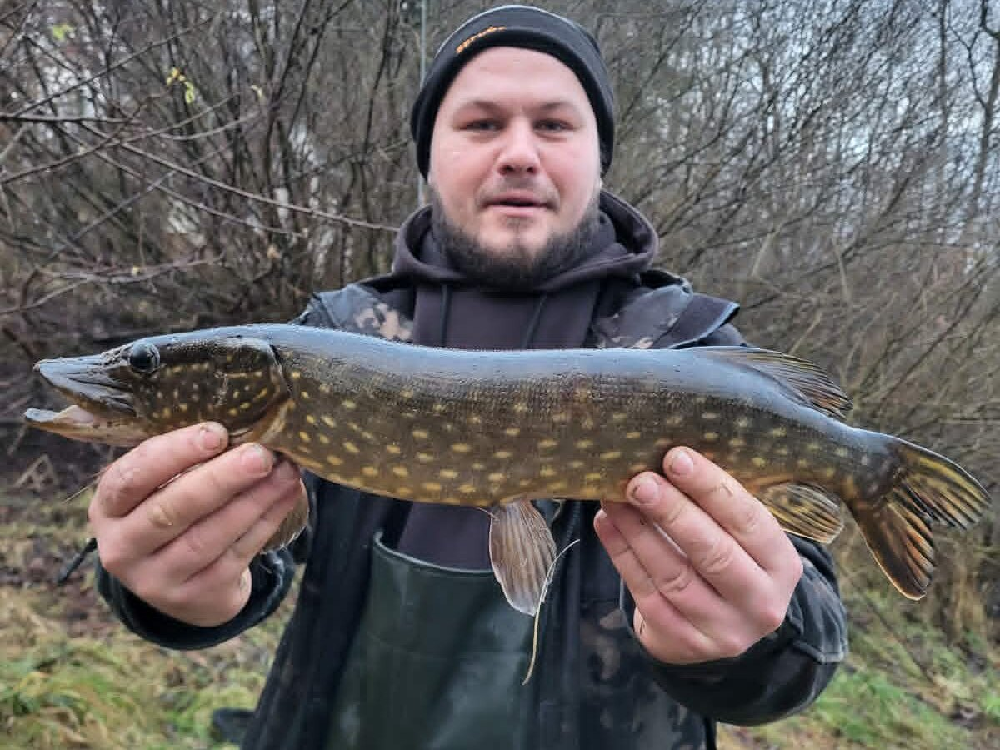

Najkrótsza odpowiedź
Opis szczupaka pomaga rozpoznać gatunek i zaplanować obserwację miejsca. Przed celowym połowem sprawdź aktualne zasady ochrony oraz regulamin konkretnej wody.
Plan obserwacji szczupaka
| Sygnał miejsca | Co zanotować | Bezpieczny następny krok |
|---|---|---|
| Roślinność i osłony | Dostęp do brzegu i możliwą drogę holu. | Nie rzucaj tam, gdzie nie odzyskasz przynęty bez ryzyka. |
| Zmiana głębokości | Widoczne krawędzie i przejścia. | Prowadź przynętę pod kontrolą. |
| Kontakt z rybą | Miejsce i warunki, bez uogólniania na całą wodę. | Sprawdź, czy połów gatunku jest dozwolony. |
Typowe błędy początkujących
- Mylenie rozpoznania gatunku z potwierdzeniem, że można go zabrać.
- Łowienie bez sprawdzenia okresu ochronnego i lokalnych ograniczeń.
- Próba holu w miejscu bez bezpiecznego dostępu do brzegu.
Checklist miejsca
Sprawdź bezpieczne dojście i wyjście ze stanowiska.
Szukaj zmian roślinności, głębokości lub osłon widocznych z brzegu.
Zaplanuj, gdzie bezpiecznie odhaczysz i wypuścisz rybę.
Jak korzystać z poradnika
Informacje gatunkowe są punktem do nauki rozpoznawania i obserwacji, nie prognozą skuteczności.
Sprawdź źródło
Decyzję o połowie i zabraniu ryby oprzyj na aktualnym zezwoleniu, regulaminie oraz zasadach ochrony.

Biologia i rozpoznawanie
Wygląd i rozpoznawanie
Szczupak pospolity (łac. Esox lucius) ma strzałkowate, wydłużone ciało z płetwą grzbietową i odbytową przesuniętymi daleko do tyłu, tuż przed ogon — to konstrukcja katapulty, zbudowana do błyskawicznego przyspieszenia z miejsca. Głowa jest duża, spłaszczona, z wydłużonym, „kaczym" pyskiem pełnym zębów: dużych kłów w żuchwie i setek drobnych, skierowanych do tyłu ząbków na podniebieniu i języku. Ubarwienie maskujące — zielonkawe lub oliwkowe z jasnymi, fasolkowatymi plamami i pręgami — zmienia się zależnie od środowiska, od jasnozłotawego w piaszczystych jeziorach po niemal czarne w wodach torfowych. W polskich wodach praktycznie nie sposób go z niczym pomylić — jego sylwetka i „kaczy" pysk są niepowtarzalne; co najwyżej zupełnie początkujący biorą małe szczupaki za duże ukleje. Samice rosną znacznie szybciej i większe niż samce — niemal wszystkie szczupaki powyżej 90 cm to ikrzyce.
Środowisko i występowanie w Polsce
Szczupak jest gatunkiem niezwykle plastycznym i występuje w całej Polsce: w jeziorach każdego typu, rzekach od krainy lipienia po ujścia, starorzeczach, zbiornikach zaporowych, kanałach, gliniankach, a nawet w wysłodzonych zatokach Bałtyku, Zalewie Szczecińskim i Wiślanym. Optimum znajduje w wodach z bogatą roślinnością zanurzoną: pasy trzcin, podwodne łąki, krawędzie ramienic i zatopione drzewa to jego klasyczne zasadzki. W jeziorach mniejsze osobniki trzymają się litoralu, a duże ikrzyce coraz częściej polują w otwartej toni za stadami sielawy, stynki czy płoci — zjawisko dobrze znane z głębokich jezior mazurskich. W rzekach wybiera spokojniejsze partie: zatoki, starorzecza, warkocze za przeszkodami, granice nurtu. Niestety w wielu wodach presja połowowa i degradacja tarlisk przetrzebiły populacje, dlatego coraz więcej okręgów wprowadza dodatkowe ograniczenia, a wędkarze masowo przechodzą na wypuszczanie złowionych ryb.
Biologia i tarło
Szczupak dojrzewa płciowo wcześnie, zwykle w 2.–4. roku życia. Trze się jako pierwsza z naszych ryb — od marca do kwietnia, czasem jeszcze pod ustępującym lodem, przy temperaturze wody zaledwie 4–10°C. Tarlaki wchodzą na zalane łąki, płytkie, trawiaste zatoki i rowy, gdzie ikra przykleja się do roślinności; to dlatego naturalne, okresowo zalewane tereny przybrzeżne są dla gatunku bezcenne, a ich osuszanie i zabudowa to jedna z głównych przyczyn spadku liczebności. Wylęg odżywia się planktonem, ale już kilkucentymetrowe szczupaczki przechodzą na pokarm rybny i są skrajnie kanibalistyczne — w przegęszczonych rocznikach rodzeństwo zjada się nawzajem. Szczupak rośnie szybko w żyznych wodach: po 5–6 latach może mierzyć 60–70 cm. Żyje kilkanaście, wyjątkowo ponad dwadzieścia lat. Wczesne tarło tłumaczy też wczesny koniec okresu ochronnego w porównaniu z sandaczem.
Żerowanie wiosną i latem
Bezpośrednio po tarle szczupaki żerują łapczywie, lecz w większości wód przypada to na okres ochronny; sezon otwiera się zwykle 1 maja, gdy ryby są jeszcze płytko, w nagrzanych zatokach i przy świeżo rosnącej roślinności. Maj i czerwiec to czas łowienia płytkiego i agresywnych brań. W pełni lata obraz się komplikuje: małe i średnie szczupaki tkwią w zasadzkach przy roślinności i biorą głównie rano oraz wieczorem, natomiast duże osobniki w głębokich jeziorach schodzą pod termoklinę lub podążają w toni za stadami ryb — stąd letnie sukcesy trollingu i łowienia w półwodzie nad głębinami. Upały i przegrzana, odtleniona woda potrafią wyłączyć żerowanie na całe dni; wtedy szanse dają wczesne świty, miejsca z dopływem chłodniejszej wody i głębsze krawędzie. Warto też pamiętać, że latem hol w ciepłej wodzie wyczerpuje rybę ekstremalnie — wypuszczane szczupaki wymagają wówczas szczególnie troskliwego podtrzymania.
Żerowanie jesienią i zimą
Jesień to klasyczny szczyt sezonu szczupakowego. Ochładzająca się woda i obumierająca roślinność wyganiają drobnicę na krawędzie i stoki, a za nią idą szczupaki, które przed zimą intensywnie żerują i częściej niż latem biorą duże przynęty. Październik i listopad to czas łowienia coraz głębiej i coraz wolniej, dużych gum i martwych rybek na zestawach drgających lub klasycznych. Zimą szczupak pozostaje aktywny — to jeden z niewielu drapieżników regularnie żerujących w wodzie o temperaturze kilku stopni — ale jego okna aktywności są krótkie, a ataki oszczędne. W grudniu i do końca roku łowi się go wolno prowadzonym jigiem, martwą rybką i na bezpiecznych lodach metodami podlodowymi tam, gdzie regulamin na to pozwala; od 1 stycznia wchodzi okres ochronny. Generalna zasada zimowa: im zimniej, tym wolniej, głębiej i bliżej skupisk białej ryby.
Przepisy, metody i taktyka
Przepisy krajowe i zasady lokalne
Przepisy krajowe: Wody śródlądowe: wymiar 45 cm; okres ochronny 1 stycznia–30 kwietnia. Źródło: Dz.U. 2023 poz. 1373, § 6–7
Granica okresu ochronnego: jeżeli pierwszy lub ostatni dzień okresu przypada w dzień ustawowo wolny od pracy, okres skraca się o ten dzień (§ 7 ust. 2); wyjątkiem jest całoroczna ochrona jesiotra.
Przed połowem: sprawdź aktualny regulamin i zezwolenie dla konkretnej wody. Wymiar, okres, limit lub zakaz lokalny może być ostrzejszy; brak wartości krajowej nie oznacza zgody na zabranie ryby.
Metody i przynęty
Szczupaka łowi się przede wszystkim spinningiem, a paleta przynęt jest najszersza ze wszystkich naszych drapieżników: gumy 8–20 cm na główkach i uzbrojeniach przelotowych, woblery pływające i tonące, jerkbaity prowadzone wędką, duże wahadłówki i obrotówki, spinnerbaity świetne w roślinności oraz przynęty powierzchniowe wczesnym rankiem nad zarośniętymi blatami. Drugą skuteczną drogą jest martwa rybka — na zestawie drgającym, klasycznym gruntowym lub spławikowym — a tam, gdzie regulamin dopuszcza, żywiec; obie metody bywają niezastąpione zimą i przy pasywnych rybach. Na dużych jeziorach praktykuje się trolling (tam, gdzie jest dozwolony — wiele wód go zakazuje). Bezwzględny element każdego zestawu to przypon odporny na zęby: stalka, drut tytanowy lub bardzo gruby fluorocarbon co najmniej 0,60–0,80 mm. Łowienie szczupaków bez przyponu to nie oszczędność, lecz skazywanie uciętych ryb na śmierć z przynętą w pysku.

Taktyka łowienia
Taktyka szczupakowa zaczyna się od struktury: szukamy granic — krawędzi roślinności, przejścia płycizny w głębię, cienia pod zwalonym drzewem, warkocza za ostrogą. Szczupak to myśliwy z zasadzki, więc przynętę prowadzimy wzdłuż takich linii albo prowokacyjnie przez ich skraj, a nie środkiem pustej toni. Tempo i charakter prowadzenia dobieramy do temperatury wody: latem sprawdzają się żywsze, nieregularne prowadzenia z przerwami, jesienią i zimą — wolny jig i długie zatrzymania, podczas których przychodzi większość brań. Gdy ryby „dziobią" i odpuszczają, pomaga zmniejszenie przynęty lub zmiana koloru na stonowany; gdy woda jest mętna — przynęty głośne, kontrastowe i większe. Na łowisku obławiamy miejsca wachlarzem rzutów i nie poświęcamy jednemu stanowisku zbyt wiele czasu: aktywny szczupak zwykle bierze w kilku pierwszych rzutach. Po wycięciu ryby z miejscówki warto wrócić tam po godzinie–dwóch, bo dobre zasadzki są szybko zajmowane przez kolejne osobniki.

Rekordy Polski — orientacyjnie
Rejestry połowów notują w Polsce szczupaki o długości około 120–130 cm i masie kilkunastu, a w historycznych doniesieniach nawet ponad 20 kg — przy czym najstarsze rekordy są słabo udokumentowane i należy je traktować z dużą ostrożnością. Współcześnie ryba powyżej metra to wynik wybitny, osiągany najczęściej na głębokich jeziorach mazurskich i pomorskich, dużych zbiornikach zaporowych oraz na Zalewie Szczecińskim i Wiślanym, gdzie szczupaki żerujące na śledziowatych osiągają znakomite przyrosty. Warto wiedzieć, że niemal wszystkie ryby tych rozmiarów to samice w wieku kilkunastu lat — ich wartość rozrodcza jest nieporównywalna z niczym, co tłumaczy rosnącą popularność wymiarów górnych i dobrowolnego wypuszczania okazów.

Wartość kulinarna i zasady C&R
Mięso szczupaka jest chude, białe i smaczne, choć zawiera widlaste ości międzymięśniowe, które trzeba umieć wyfiletować; klasyka kuchni to szczupak po żydowsku, pulpety i kotlety. Kulinarnie najrozsądniejsze są ryby średnie, w okolicach 55–70 cm — duże ikrzyce powinny wracać do wody niezależnie od litery regulaminu. Przy zamiarze wypuszczenia kluczowa jest technika: mocny sprzęt skracający hol, podbierak z miękką siatką lub chwyt pod skrzelę od dołu (nigdy za oczodoły), długie szczypce do odhaczania, nożyce do cięcia kotwic w trudnych przypadkach oraz minimalny czas ryby poza wodą, najlepiej na mokrej macie. Szczupak źle znosi przetrzymywanie w siatkach. Wypuszczamy go, podtrzymując w wodzie do momentu, aż sam pewnie odpłynie — w ciepłej wodzie może to potrwać kilka minut i nie wolno tego procesu skracać.
Ciekawostki
Szczupak atakuje z przyspieszeniem, które w pomiarach laboratoryjnych należy do najwyższych wśród ryb słodkowodnych — z zasadzki do pełnej szybkości dochodzi w ułamku sekundy, zwykle na dystansie krótszym niż długość jego ciała. Ofiarę chwyta w poprzek, po czym obraca ją głową do gardła; stąd klasyczna rada, by przy łowieniu na żywca nie zacinać natychmiast — i stąd też skuteczność przynęt zatrzymywanych w miejscu. Plamisty wzór boków jest indywidualny jak odcisk palca i bywa wykorzystywany w badaniach do identyfikacji konkretnych osobników. Szczupak ma też zaskakująco dobrą pamięć łowiska: badania znakowanych ryb pokazują silne przywiązanie do rewirów i powroty na te same zasadzki. W kulturze gatunek obrósł legendami — od „szczupaka cesarskiego" rzekomo żyjącego setki lat po opowieści o atakach na kaczki, z których akurat ta ostatnia jest prawdziwa: duże osobniki regularnie polują na pisklęta ptaków wodnych.
Z naszych relacji
Szczupak 124 cm z Kisajna — okoliczności połowu i to, czego źródła nie potwierdzają.
FAQ — najczęstsze pytania
Czy przypon stalowy zmniejsza liczbę brań?
W większości sytuacji wpływ cienkiej, miękkiej stalki lub tytanu na liczbę brań szczupaka jest pomijalny — to drapieżca atakujący ruch i sylwetkę, nie analizujący zestawu jak karp. Nawet gdyby przypon kosztował pojedyncze brania, alternatywą jest ucinanie ryb, które odpływają z przynętą w pysku. Przy świadomym łowieniu szczupaka przypon odporny na zęby to standard etyczny, nie opcja.
Duża przynęta = duży szczupak?
Częściowo. Duże przynęty (18 cm i więcej) statystycznie selekcjonują większe ryby i ograniczają brania drobnicy, ale duże szczupaki regularnie biorą też małe przynęty — zwłaszcza zimą i przy niskiej aktywności. Rozsądna praktyka to dobieranie rozmiaru do sezonu i pokarmu w łowisku: jesienią śmiało w górę, w trudne dni w dół. Żadna wielkość przynęty nie gwarantuje rozmiaru ryby.
Dlaczego szczupak „odpuszcza" przynętę tuż przy brzegu?
Szczupaki często odprowadzają przynętę i atakują dopiero przy zmianie jej zachowania. Tuż przed wyjęciem warto więc wykonać tzw. ósemkę lub przyspieszenie–zatrzymanie, zamiast mechanicznie wyciągać zestaw. Jeśli ryba odprowadza i zawraca, pomaga zmiana tempa, mniejsza przynęta lub powrót w to miejsce po pauzie. To naturalne zachowanie ostrożnego drapieżnika, nie błąd wędkarza.
Jak bezpiecznie odhaczyć szczupaka?
Potrzebne są długie szczypce lub pean, a przy głęboko siedzących kotwicach — obcinaczki do haków. Rybę kładziemy na mokrej macie lub trawie, większe sztuki można przytrzymać chwytem pod pokrywę skrzelową od dołu, nie dotykając skrzeli. Nigdy nie wsuwamy palców w pysk i nie trzymamy ryby pionowo za głowę. Spokój i przygotowane wcześniej narzędzia skracają całą operację do kilkunastu sekund.
Plan na szczupaka: od gatunku do miejsca
Rola tej strony: rozpoznać szczupaka i zrozumieć jego środowisko; wybór techniki, zestawu i terminu prowadzą osobne poradniki. Najpierw potwierdź, że woda oraz aktualne zasady dopuszczają połów, potem dobierz plan do widocznej struktury, a nie do obietnicy „pewnego brania”.
| Warunek z brzegu | Pierwsza decyzja | Co zmienić, gdy brak kontaktu |
|---|---|---|
| Krawędź roślinności, płytka woda | Prowadź przynętę równolegle do granicy i załóż przypon odporny na zęby. | Zwolnij, wydłuż pauzę albo zmień kąt rzutu. |
| Twardy spadek lub rynna | Kontroluj opad i trzymaj kontakt z przynętą. | Zmniejsz obciążenie, jeśli przynęta zbyt szybko przechodzi strefę. |
| Mętna woda lub silny wiatr | Wybierz wyraźną pracę przynęty, niekoniecznie większy rozmiar. | Obłów krócej kilka struktur zamiast długo jedną pustą wodę. |
Co sprawdzić nad wodą
- czy wybrane miejsce jest dostępne z brzegu i nie leży w strefie zakazu;
- gdzie kończy się roślinność, spadek lub przeszkoda podwodna;
- czy przypon, kotwice i podbierak pozwalają bezpiecznie zakończyć hol.
Czego nie obiecuje ten poradnik
Nie wskazuje „pewnych” stanowisk, nie gwarantuje brania ani nie zastępuje regulaminu administratora wody. Kalendarz opisuje warunki orientacyjnie, a nie wydaje zgody na połów.
Przejdź kolejno: spinning — prowadzenie przynęty, dobór kołowrotka, żyłka czy plecionka, kalendarz brań szczupaka oraz wody Mazowsza.
Źródła i weryfikacja
Prawo: punktem wyjścia dla krajowych wymiarów i okresów ochronnych w powierzchniowych wodach śródlądowych jest § 6–7 rozporządzenia Dz.U. 2023 poz. 1373 (źródło zweryfikowano 2026-07-20). Przed połowem sprawdź zezwolenie, regulamin i komunikaty gospodarza tej wody; mogą wprowadzać dodatkowe, ostrzejsze warunki, lecz nie zastępują aktu. Praktyka redakcyjna: opis metod i taktyki ma charakter edukacyjny.
Tożsamość biologiczna i źródła
Nazwa łacińska: Esox lucius. Grupa atlasu: drapieżniki. Alias: szczupak pospolity.
Źródła: SLU: dane i kod badania (2025) — dynamika populacji, odłowy i przemieszczanie szczupaka w tarlisku Bałtyku (2017–2022); nie opisuje wszystkich wód · FishBase: Esox lucius — tożsamość taksonomiczna i opis gatunku; nie potwierdza lokalnego występowania ani zasad połowu. Dostęp: 2026-07-17. Zakres: tożsamość taksonomiczna i nazewnictwo oraz, gdy wskazano, ocena ochrony; bez potwierdzenia lokalnego występowania, stanu łowiska ani zasad połowu.
Porównanie taksonomiczne
Porównaj z kartą Sandacz pospolity. Obie karty prowadzą do osobnych rekordów źródłowych; porównanie nie jest kluczem oznaczania w terenie ani gwarancją wyniku połowu.